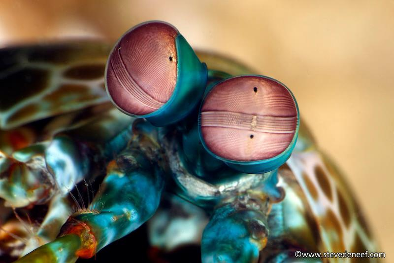
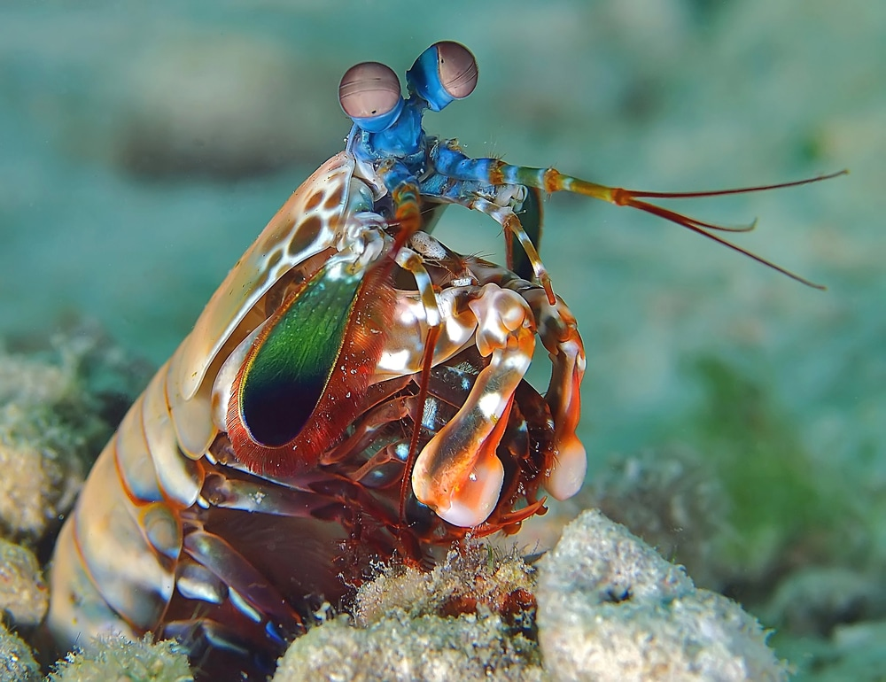
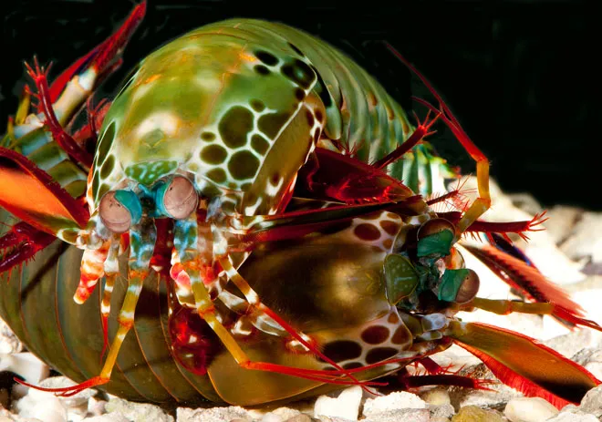

Fatos sobre o Stomatopoda
Informações gerais
Nome científico: Odontodactylus scyllarus
Reino: Animalia
Filo: Arthropoda
Subfilo: Crustacea
Classe: Malacostraca
Subclasse: Hoplocarida
Ordem: Stomatopoda
Olhos
Eles possuem entre 12 a 16 fotoreceptores diferentes, reconhecendo as cores de um jeito único.
Os olhos podem se mover um independente do outro.
Garras
Podem dar socos a 80km/h, a mesma velocidade de disparar um rifle .22.
A força do soco é 2,500 vezes mais que a força do peso do próprio animal.
Eles são tão fortes que podem quebrar um vidro de aquário comum.
Comportamento
Podem se acasalar 20, até 30 vezes durante a vida.
Possuem relação monogâmica, permanecendo em relações de longa duração.
Apesar de se parecerem com camarões e lagostas, eles conseguem se enrolar e rolar por aí.
Referências bibliográficas
- Fact Animal
- Kidadl
- Wikipedia
- National Geographic
- Imagens: Steve De Neef, Beverly Speed e Roy Caldwell